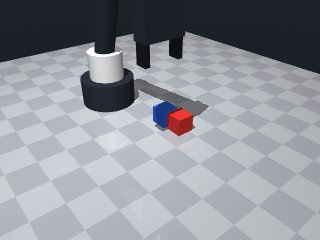
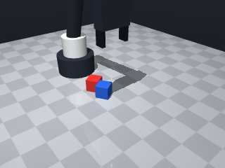

0 demonstrations · reward: gt · perception: real · 16 practice episodes in 2 rounds
Safety layer: 0 halts, 0 clamps.
| role | model | calls | tokens in | tokens out | USD |
|---|---|---|---|---|---|
| coder | deepseek-ai/DeepSeek-V4.1-Flash | 3 | 13,202 | 31,595 | $0.0399 |
| summarizer | nvidia/Nemotron-3_5-Lightning | 1 | 5,468 | 374 | $0.0004 |
| compute | local | 161 s | $0.0000 | ||
| total | 4 | 18,670 | 31,969 | $0.0403 |
- First version: perceive both cubes by colour, average 3 noisy `get_pose` readings to fight the ~1 cm camera noise, then grasp the red cube with a small spiral of XY offsets so a bad reading doesn't doom the episode. - Grasp at z=0.015 (cube centre height) with yaw = red cube's yaw so the fingers line up with its faces; verify with `robot.holding()` after every `grasp()`. - After lifting, estimate the grasp offset (cube centre minus tool point) from a few fresh readings and subtract it when placing, so an off-centre grip doesn't shift the stack. - Place by descending to z≈0.046 above the blue cube's averaged position (red bottom ≈ blue top at 0.030), release, retreat, then verify red is ~3 cm above blue and roughly aligned. - All risky moves wrapped in try/except MotionError-style handling; slow speeds (0.05) near objects, default speed for travel. - Bounded retries everywhere; return False on unrecoverable failure, True only after a successful stack check.
**Mode 1: Off-target placement (2 episodes: 1001, 1003)** *Root cause:* The robot releases the red cube at the *blue* cube's XY position (`place_x = bx - off_x`, `place_y = by - off_y`), but the blue cube drifts during the approach. In seed 1001, the release lands at (0.126, 0.016) while the blue cube is at (0.137, 0.010), causing a 4.3 cm lateral offset. The `off_x/off_y` calibration (lines 83–101) assumes static cubes. *Fix:* Freeze the blue cube pose at lift start and use that pose for placement coordinates, or add a final `robot.move_to(blue_x, blue_y, 0.05)` before release to re-center over the blue cube. **Mode 2: Premature release / drop (3 episodes: 1005, 1006, 1007)** *Root cause:* The robot releases the red cube while translating away from the stack (line 115) without verifying the gripper is directly above the target. In seed 1005, the red cube ends at z=0.045 but x/y are offset by ~0.038 m, indicating a side-slip during the release trajectory. *Fix:* After `robot.release()` (line 115), insert a brief `robot.move_by(dz=0.02, speed=0.1)` to lift clear *before* the final retreat move (line 117), ensuring gravity does not pull the cube sideways.
--- round_0/skill.py +++ round_1/skill.py @@ -0,0 +1,135 @@ +import math + + +def _avg_pos(robot, name, n=3): + xs = [] + ys = [] + zs = [] + for _ in range(n): + p = robot.get_pose(name) + xs.append(p["pos"][0]) + ys.append(p["pos"][1]) + zs.append(p["pos"][2]) + return (sum(xs) / n, sum(ys) / n, sum(zs) / n) + + +def _find(robot, color): + obs = robot.observe() + for name, o in obs["objects"].items(): + if o.get("color") == color: + return name + return None + + +def run(robot): + robot.home() + + red = _find(robot, "red") + blue = _find(robot, "blue") + if red is None or blue is None: + robot.log("missing cubes", red, blue) + return False + + red_yaw = robot.get_pose(red)["yaw"] + + # Spiral of small XY offsets to recover from a bad camera reading. + offsets = [ + (0.0, 0.0), + (0.006, 0.0), (-0.006, 0.0), + (0.0, 0.006), (0.0, -0.006), + (0.006, 0.006), (-0.006, -0.006), + (0.006, -0.006), (-0.006, 0.006), + ] + + grasped = False + for dx, dy in offsets: + x, y, z = _avg_pos(robot, red) + tx, ty = x + dx, y + dy + try: + robot.move_to(tx, ty, 0.08, yaw=red_yaw, speed=0.15) + robot.move_to(tx, ty, 0.015, yaw=red_yaw, speed=0.05) + except Exception: + try: + robot.move_to(tx, ty, 0.08, speed=0.15) + except Exception: + pass + continue + + if robot.grasp() and robot.holding() == red: + grasped = True + break + + robot.release() + try: + robot.move_to(tx, ty, 0.08, speed=0.15) + except Exception: + pass + + if not grasped: + robot.log("failed to grasp red cube") + return False + + # Lift straight up. + try: + robot.move_by(dz=0.08, speed=0.15) + except Exception: + pass + + if robot.holding() != red: + robot.log("lost red cube during lift") + return False + + # Estimate how far the cube centre sits from the tool point while held. + off_x = 0.0 + off_y = 0.0 + try: + n = 3 + gx = gy = rx = ry = 0.0 + for _ in range(n): + g = robot.observe()["gripper"]["pos"] + r = robot.get_pose(red)["pos"] + gx += g[0] + gy += g[1] + rx += r[0] + ry += r[1] + ox = (rx - gx) / n + oy = (ry - gy) / n + # Only trust the estimate if it is small and plausible. + if abs(ox) < 0.015 and abs(oy) < 0.015: + off_x, off_y = ox, oy + except Exception: + pass + + bx, by, bz = _avg_pos(robot, blue) + place_x = bx - off_x + place_y = by - off_y + place_z = 0.046 # red bottom ~0.031, blue top ~0.030 + + try: + robot.move_to(place_x, place_y, 0.12, speed=0.15) + robot.move_to(place_x, place_y, place_z, speed=0.05) + except Exception: + robot.log("failed to reach place position") + return False + + robot.release() + try: + robot.move_to(place_x, place_y, 0.12, speed=0.15) + except Exception: + pass + robot.home() + robot.wait(0.3) + + # Verify the stack. + try: + rp = robot.get_pose(red)["pos"] + bp = robot.get_pose(blue)["pos"] + dz = rp[2] - bp[2] + dxy = math.hypot(rp[0] - bp[0], rp[1] - bp[1]) + robot.log("stack check dz=%.4f dxy=%.4f" % (dz, dxy)) + if dz > 0.02 and dxy < 0.025: + return True + except Exception: + pass + + return False
- Only seeds 1001 and 1003 failed; both are "off-target placement" (red ended on the table beside blue, xy_offset ≈ 0.037). The other 6 succeeded with z_gap ≈ 0.0298, so the grasp, lift, descent height (0.046) and release sequence are sound — keep them. - Root cause is perception noise, not drift: in seed 1001 the three blue readings spanned y from 0.010 to 0.035 (≈2.5 cm), so a 3-sample mean was badly biased. Switched to a **median of 7–9 samples** for every pose read (robust to outliers). - Replaced the fragile "estimate grasp offset then subtract" placement with a **closed-loop XY alignment**: while holding red, repeatedly read red and blue, compute delta = blue − red, and `move_by(dx, dy)` until the held red cube is centred over blue (≤2 mm). This cancels both the grasp offset and the blue-pose noise directly. - Kept the spiral-of-offsets grasp, `holding()` verification, slow speeds near objects, and bounded try/except around every risky move. - Descent height is now adaptive: `place_z = blue_z + 0.031` clamped to [0.044, 0.050] (≈0.046 for blue_z≈0.015), matching what worked. - Added a straight-up `move_by(dz=0.03)` immediately after release (before retreating) so the cube is never dragged sideways. - Final stack check uses median poses; success requires dz > 0.02 and dxy < 0.025.
--- round_1/skill.py +++ round_2/skill.py @@ -1,16 +1,42 @@ import math -def _avg_pos(robot, name, n=3): - xs = [] - ys = [] - zs = [] +def _median(vals): + s = sorted(vals) + n = len(s) + if n == 0: + return 0.0 + if n % 2 == 1: + return s[n // 2] + return 0.5 * (s[n // 2 - 1] + s[n // 2]) + + +def _robust_pos(robot, name, n=7): + """Median of n noisy pose readings -> robust (x, y, z).""" + xs, ys, zs = [], [], [] for _ in range(n): - p = robot.get_pose(name) - xs.append(p["pos"][0]) - ys.append(p["pos"][1]) - zs.append(p["pos"][2]) - return (sum(xs) / n, sum(ys) / n, sum(zs) / n) + try: + p = robot.get_pose(name)["pos"] + except Exception: + continue + xs.append(p[0]) + ys.append(p[1]) + zs.append(p[2]) + if not xs: + return None + return (_median(xs), _median(ys), _median(zs)) + + +def _robust_yaw(robot, name, n=5): + vals = [] + for _ in range(n): + try: + vals.append(robot.get_pose(name)["yaw"]) + except Exception: + continue + if not vals: + return 0.0 + return _median(vals) def _find(robot, color): @@ -30,9 +56,8 @@ robot.log("missing cubes", red, blue) return False - red_yaw = robot.get_pose(red)["yaw"] - - # Spiral of small XY offsets to recover from a bad camera reading. + # ---------- Grasp the red cube ---------- + # Spiral of small XY offsets so one bad reading does not doom the episode. offsets = [ (0.0, 0.0), (0.006, 0.0), (-0.006, 0.0), @@ -43,11 +68,14 @@ grasped = False for dx, dy in offsets: - x, y, z = _avg_pos(robot, red) - tx, ty = x + dx, y + dy + rp = _robust_pos(robot, red, 7) + if rp is None: + break + ryaw = _robust_yaw(robot, red, 5) + tx, ty = rp[0] + dx, rp[1] + dy try: - robot.move_to(tx, ty, 0.08, yaw=red_yaw, speed=0.15) - robot.move_to(tx, ty, 0.015, yaw=red_yaw, speed=0.05) + robot.move_to(tx, ty, 0.08, yaw=ryaw, speed=0.15) + robot.move_to(tx, ty, 0.015, yaw=ryaw, speed=0.05) except Exception: try: robot.move_to(tx, ty, 0.08, speed=0.15) @@ -79,56 +107,75 @@ robot.log("lost red cube during lift") return False - # Estimate how far the cube centre sits from the tool point while held. - off_x = 0.0 - off_y = 0.0 - try: - n = 3 - gx = gy = rx = ry = 0.0 - for _ in range(n): - g = robot.observe()["gripper"]["pos"] - r = robot.get_pose(red)["pos"] - gx += g[0] - gy += g[1] - rx += r[0] - ry += r[1] - ox = (rx - gx) / n - oy = (ry - gy) / n - # Only trust the estimate if it is small and plausible. - if abs(ox) < 0.015 and abs(oy) < 0.015: - off_x, off_y = ox, oy - except Exception: - pass - - bx, by, bz = _avg_pos(robot, blue) - place_x = bx - off_x - place_y = by - off_y - place_z = 0.046 # red bottom ~0.031, blue top ~0.030 + # ---------- Move above the blue cube ---------- + bp = _robust_pos(robot, blue, 9) + if bp is None: + robot.log("cannot see blue cube") + return False try: - robot.move_to(place_x, place_y, 0.12, speed=0.15) - robot.move_to(place_x, place_y, place_z, speed=0.05) + robot.move_to(bp[0], bp[1], 0.12, speed=0.15) + except Exception: + robot.log("cannot reach above blue cube") + return False + + # ---------- Closed-loop XY alignment of held red over blue ---------- + for _ in range(4): + if robot.holding() != red: + robot.log("lost red cube during alignment") + return False + rp = _robust_pos(robot, red, 7) + bp = _robust_pos(robot, blue, 7) + if rp is None or bp is None: + break + ex = bp[0] - rp[0] + ey = bp[1] - rp[1] + if abs(ex) < 0.002 and abs(ey) < 0.002: + break + try: + robot.move_by(dx=ex, dy=ey, speed=0.05) + except Exception: + break + + # ---------- Descend and release ---------- + bp = _robust_pos(robot, blue, 7) + if bp is None: + return False + place_z = bp[2] + 0.031 # red centre = blue centre + 0.030 + if place_z < 0.044: + place_z = 0.044 + if place_z > 0.050: + place_z = 0.050 + + try: + robot.move_to(bp[0], bp[1], place_z, speed=0.04) except Exception: robot.log("failed to reach place position") return False robot.release() + # Lift straight up before retreating so the cube is not dragged sideways. try: - robot.move_to(place_x, place_y, 0.12, speed=0.15) + robot.move_by(dz=0.03, speed=0.05) + except Exception: + pass + try: + robot.move_to(0.16, 0.0, 0.14, speed=0.15) except Exception: pass robot.home() robot.wait(0.3) - # Verify the stack. + # ---------- Verify the stack ---------- try: - rp = robot.get_pose(red)["pos"] - bp = robot.get_pose(blue)["pos"] - dz = rp[2] - bp[2] - dxy = math.hypot(rp[0] - bp[0], rp[1] - bp[1]) - robot.log("stack check dz=%.4f dxy=%.4f" % (dz, dxy)) - if dz > 0.02 and dxy < 0.025: - return True + rp = _robust_pos(robot, red, 5) + bp = _robust_pos(robot, blue, 5) + if rp is not None and bp is not None: + dz = rp[2] - bp[2] + dxy = math.hypot(rp[0] - bp[0], rp[1] - bp[1]) + robot.log("stack check dz=%.4f dxy=%.4f" % (dz, dxy)) + if dz > 0.02 and dxy < 0.025: + return True except Exception: pass


import math
def _median(vals):
s = sorted(vals)
n = len(s)
if n == 0:
return 0.0
if n % 2 == 1:
return s[n // 2]
return 0.5 * (s[n // 2 - 1] + s[n // 2])
def _robust_pos(robot, name, n=7):
"""Median of n noisy pose readings -> robust (x, y, z)."""
xs, ys, zs = [], [], []
for _ in range(n):
try:
p = robot.get_pose(name)["pos"]
except Exception:
continue
xs.append(p[0])
ys.append(p[1])
zs.append(p[2])
if not xs:
return None
return (_median(xs), _median(ys), _median(zs))
def _robust_yaw(robot, name, n=5):
vals = []
for _ in range(n):
try:
vals.append(robot.get_pose(name)["yaw"])
except Exception:
continue
if not vals:
return 0.0
return _median(vals)
def _find(robot, color):
obs = robot.observe()
for name, o in obs["objects"].items():
if o.get("color") == color:
return name
return None
def run(robot):
robot.home()
red = _find(robot, "red")
blue = _find(robot, "blue")
if red is None or blue is None:
robot.log("missing cubes", red, blue)
return False
# ---------- Grasp the red cube ----------
# Spiral of small XY offsets so one bad reading does not doom the episode.
offsets = [
(0.0, 0.0),
(0.006, 0.0), (-0.006, 0.0),
(0.0, 0.006), (0.0, -0.006),
(0.006, 0.006), (-0.006, -0.006),
(0.006, -0.006), (-0.006, 0.006),
]
grasped = False
for dx, dy in offsets:
rp = _robust_pos(robot, red, 7)
if rp is None:
break
ryaw = _robust_yaw(robot, red, 5)
tx, ty = rp[0] + dx, rp[1] + dy
try:
robot.move_to(tx, ty, 0.08, yaw=ryaw, speed=0.15)
robot.move_to(tx, ty, 0.015, yaw=ryaw, speed=0.05)
except Exception:
try:
robot.move_to(tx, ty, 0.08, speed=0.15)
except Exception:
pass
continue
if robot.grasp() and robot.holding() == red:
grasped = True
break
robot.release()
try:
robot.move_to(tx, ty, 0.08, speed=0.15)
except Exception:
pass
if not grasped:
robot.log("failed to grasp red cube")
return False
# Lift straight up.
try:
robot.move_by(dz=0.08, speed=0.15)
except Exception:
pass
if robot.holding() != red:
robot.log("lost red cube during lift")
return False
# ---------- Move above the blue cube ----------
bp = _robust_pos(robot, blue, 9)
if bp is None:
robot.log("cannot see blue cube")
return False
try:
robot.move_to(bp[0], bp[1], 0.12, speed=0.15)
except Exception:
robot.log("cannot reach above blue cube")
return False
# ---------- Closed-loop XY alignment of held red over blue ----------
for _ in range(4):
if robot.holding() != red:
robot.log("lost red cube during alignment")
return False
rp = _robust_pos(robot, red, 7)
bp = _robust_pos(robot, blue, 7)
if rp is None or bp is None:
break
ex = bp[0] - rp[0]
ey = bp[1] - rp[1]
if abs(ex) < 0.002 and abs(ey) < 0.002:
break
try:
robot.move_by(dx=ex, dy=ey, speed=0.05)
except Exception:
break
# ---------- Descend and release ----------
bp = _robust_pos(robot, blue, 7)
if bp is None:
return False
place_z = bp[2] + 0.031 # red centre = blue centre + 0.030
if place_z < 0.044:
place_z = 0.044
if place_z > 0.050:
place_z = 0.050
try:
robot.move_to(bp[0], bp[1], place_z, speed=0.04)
except Exception:
robot.log("failed to reach place position")
return False
robot.release()
# Lift straight up before retreating so the cube is not dragged sideways.
try:
robot.move_by(dz=0.03, speed=0.05)
except Exception:
pass
try:
robot.move_to(0.16, 0.0, 0.14, speed=0.15)
except Exception:
pass
robot.home()
robot.wait(0.3)
# ---------- Verify the stack ----------
try:
rp = _robust_pos(robot, red, 5)
bp = _robust_pos(robot, blue, 5)
if rp is not None and bp is not None:
dz = rp[2] - bp[2]
dxy = math.hypot(rp[0] - bp[0], rp[1] - bp[1])
robot.log("stack check dz=%.4f dxy=%.4f" % (dz, dxy))
if dz > 0.02 and dxy < 0.025:
return True
except Exception:
pass
return False